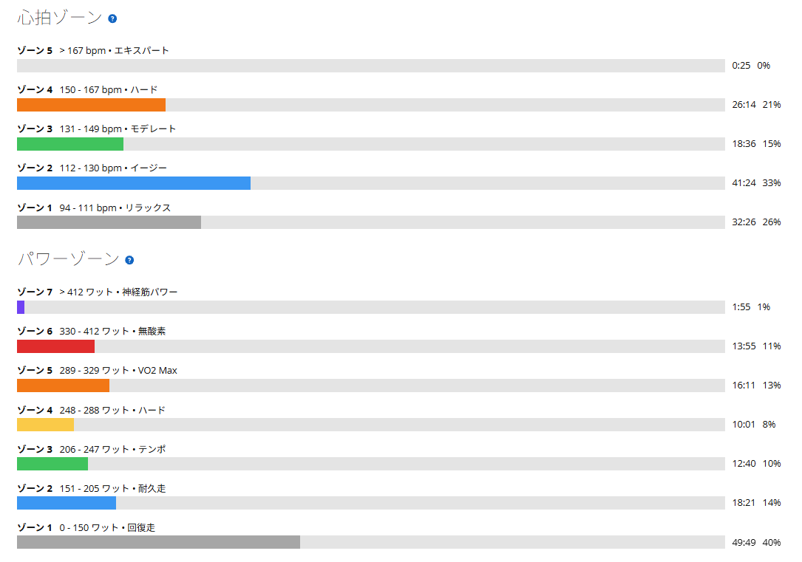
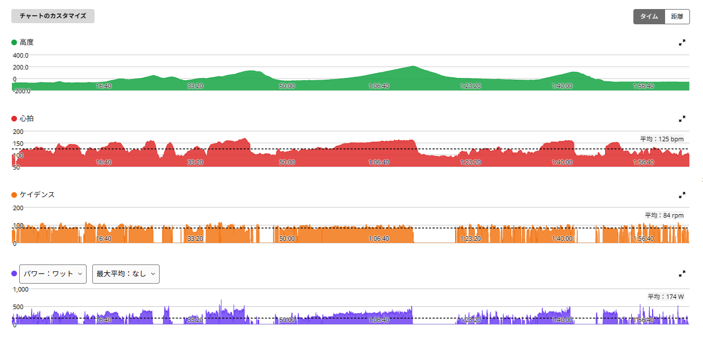

昨日抑えた分、今日は脚が軽かった。太平山反時計回りで成長を少し実感
今日は「太平山反時計回り」の2回目。前日は唐沢山を3回登る回復寄りのライドで頑張らなかった。
そのおかげもあってか、今日は脚が軽い。走り出してすぐに「今日はよく動くな」という感覚があった。結果として、同じ太平山反時計回りでも、前回より全体的に高い出力で走ることができた。

51.54km・NP248W・TSS165.6
- 全体51.54km / 2時間03分01秒 / 獲得805m / 平均気温24.4℃
- 負荷平均174W / NP248W / IF0.902 / TSS165.6
- 心拍・回転平均125bpm / 最大171bpm / 平均84rpm
- 効果有酸素TE4.3 / 無酸素TE0.9 / 運動負荷219
- 前回（10月6日）NP238W / 平均心拍127bpm / TSS152.8
ルートは前回と同じく、名もなき峠 → 下皆川街道 → 登り返し → 太平山 → 琴平峠 → 唐沢山。6つの区間はすべて前回より速く、区間の合計で約3分縮んだ。

短い登りのあとでも、疲れが以前ほど残らない
- 名もなき峠2分07秒7 / 323W（前回 2分13秒・321W）
- 下皆川街道2分08秒1 / 350W（前回 2分18秒・325W）
- 登り返し52秒9 / 394W（前回 56秒・357W）
名もなき峠はまだ無理に出し切る感じではなく、出力はほぼ同じでタイムだけ少し短縮。下皆川街道と登り返しは、数字がはっきり上がっている。
ただ、今日いちばん印象的だったのは数字ではない。以前はこういう登り返しが、地味に脚へ残る感覚があった。太平山へ向かう途中の登り返しや、西山田林道の登り返しでは「ここでまた登るのか」と、疲労を強く感じることがあった。でも今日は「前より疲れが残らないな」という感じ。単発のパワーだけではなく、そのあとにどれだけ脚が残るか。そこが少し変わってきた気がする。
太平山は27秒縮んで321W
- 太平山6分57秒1 / 平均321W / 心拍平均151bpm・最大170bpm / 90rpm
- 前回7分24秒 / 303W
27秒短縮して、出力も18Wアップ。太平山ではしっかり踏めている。それでも、脚が完全に終わる感じはなかった。
琴平峠は、心拍がほぼ同じで17W上がった
- 琴平峠14分18秒 / 平均309W / 心拍平均153bpm・最大164bpm / 88rpm
- 前回15分08秒 / 292W / 心拍平均155bpm
今回は17W高いのに、平均心拍はむしろ2bpm低い。タイムも50秒短縮。コンディションや風などの条件差はあるので、これだけで効率が上がったと断定はできない。ただ、出力は上がり、タイムは縮み、心拍は上がらず、脚も軽かった。材料はそろっている。良い内容だった。
唐沢山でも331Wを出せた
- 唐沢山5分48秒5 / 平均331W / 心拍平均150bpm・最大162bpm
- 前回7分23秒 / 244W（最後は抑えて登った）
前回は意図的に抑えたので、ここはそのまま比べられない。それでも今回は、太平山、琴平峠まで走ったあとでも331W。最後まで脚が残っていた。
昨日抑えた意味もあった
前日は脚が軽いのに、睡眠の質を見て出力を抑えた。あのとき無理に踏んでいたら、今日ここまで軽く走れたかは分からない。TSS71.8まで落として、今日はTSS165.6。負荷の波を作ったことで、今日は良い状態で走れた感じがある。
毎日同じように頑張るより、「今日は抑える」「今日はしっかりやる」を分けた方が、結果的にいい走りにつながるのかもしれない。
今のルートはかなりきつい。でも続けたい
今は太平山だけで終わらず、琴平峠、唐沢山まで入れている。正直、かなりきつい。もちろん、まだ楽になったとは言えない。最後まで走ればしっかり疲れる。でも、今はきつくても、これを続けていけば少しずつ楽になるはず。
今日、登り返しで以前ほど疲れを感じなかったように、何回も走っていけば「前はここで脚が終わっていた」という場所が少しずつ後ろへずれていく。そうなれば、富士ヒルで必要な長時間の持続力にもつながっていくと思う。
今日やってみて思ったこと
今日は自信になった。前回と同じルートで、太平山は303Wから321W、琴平峠は292Wから309Wに上がった。それでも最後の唐沢山まで脚が残っていた。数字も良かったが、それ以上に主観が良かった。単発のパワーより、後半まで脚が残ること。そこに、少しずつだが成長を感じている。
次に見るポイント
- 配分太平山までで脚を使いすぎず、琴平・唐沢まで高出力を維持できるか
- 登り返し同じルートを繰り返したとき、登り返しの疲労感がさらに減るか
- 前日の負荷前日に負荷を落としたとき、翌日の走りがどう変わるか。睡眠も数字で残す
- 後半距離を維持しながら後半の出力を伸ばせるか
- 定点観測太平山反時計回りを定点観測として使う
今のルートはきつい。でも、今日みたいに「前より少し楽になった」と思える日があると、続けていけばもっと変わるかもしれない。そう思えるライドだった。